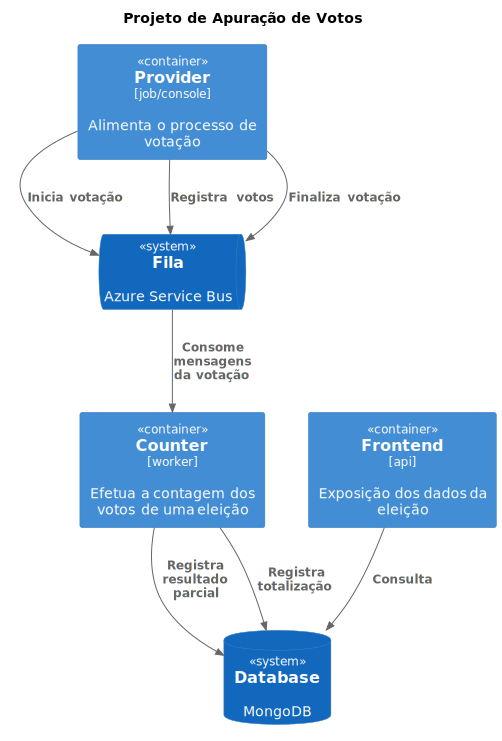
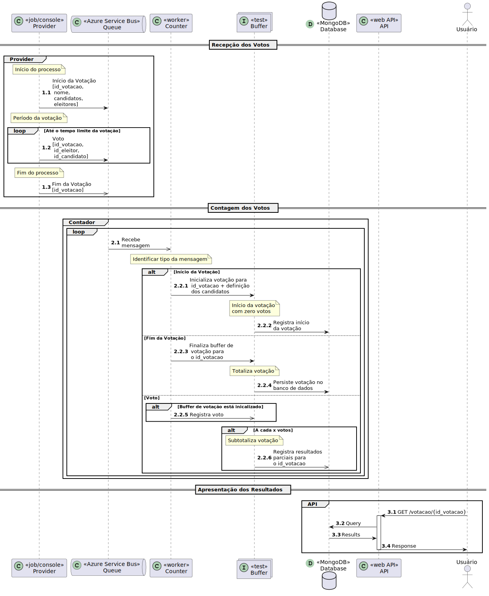

C# para Cobolistas
C# para CobolistasProjeto: Aplicação de Apuração de Votos
Para controlar os dados de uma eleição vamos desenvolver um projeto de microsserviços para a coleta, processamento e apresentação de resultados.
Domínio
- Eleição = Processo de Votação + Apuração de votos
- Candidato = Pessoa candidata a um cargo
- Eleitor = Pessoa que vota em um candidato
- Votação = coleta de votos em uma seção
- Voto = Registro da intenção de um eleitor. Único por Eleitor/Votação
Arquitetura

Contexto Inicial
- A coleta dos votos será feita por um microsserviço (PROVIDER)
- A contagem será feita por um microsserviço (COUNTER)
- A apresentação dos dados será disponibilizada por uma API (API)

A apresentação dos dados da eleição serão feitas por uma API com os seguintes endpoints:
-
GET /eleicao/{id_votacao}
-
status = {inexistente, iniciado, ocorrendo, finalizado}
- resultados = [candidatos+contagem de votos], classificacao:{primeiro_lugar, segundo_lugar}, brancos_nulos
{
"status":"...",
"resultados":[
{"id_candidato":0,"nome":"","votos":0}
],
"classificacao":{
"primeiro":{"id_candidato":0,"nome"."votos":0},
"segundo":{"id_candidato":0,"nome"."votos":0}
},
"brancos_nulos": 0,
"eleitores": {
"comparecendo": 0,
"ausentes": 0
}
}
Retornando uma lista de objetos com os candidatos e seus votos recebidos, o(s) candidato(s) mais candidatos (1 ou 2).
Modelos de Dados
Votação
- id
- nome
- candidatos
- eleitors
{
"id":0,
"nome":"",
"candidatos":[
{
"id":0,
"nome":""
}],
"eleitors":[
{
"id":0,
"nome":""
}]
}
Candidato
- id
- nome
{
"id":0,
"nome":""
}
Eleitor
- id
- nome
{
"id":0,
"nome":""
}
Voto
- id_votacao
- id_eleitor
- id_candidato
{
"id_votacao":0,
"id_eleitor":0,
"id_candidato":0
}
Mensagens
Início da votação
- header -> tipo=inicio
- conteúdo -> Votação (json)
Fim da votação
- header -> tipo=fim
- conteúdo -> { id: 0 }
Voto
- header -> tipo=voto
- conteúdo -> Voto (json)